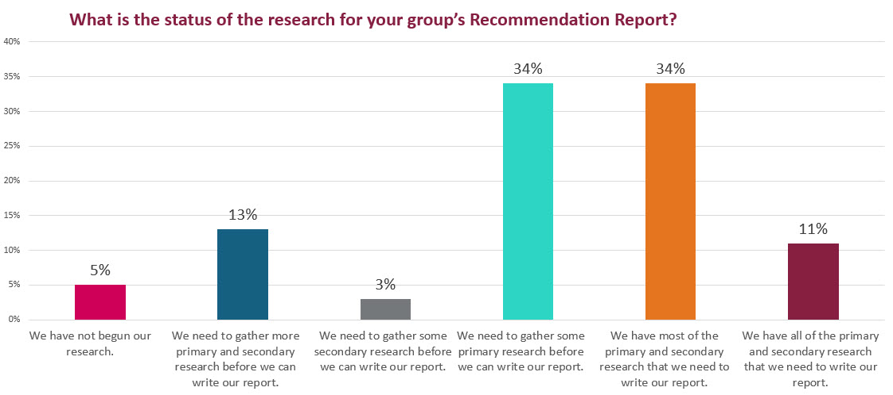

At this point, you should be finished or almost finished with your research for the Recommendation Report. So you can see how your progress compares to others in the course, I asked you to tell me about the status of your research. The results are in the graph below.
What is the status of the research for your group’s Recommendation Report?
Results: